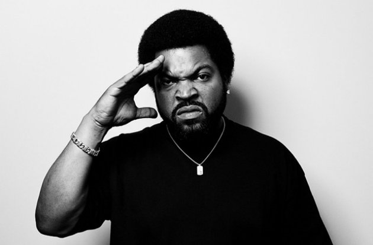

O'Shea Jackson, Sr. (born June 15, 1969), better known by his stage name Ice Cube, is an American rapper, record producer, actor, and filmmaker. He began his career as a member of the hip-hop group C.I.A. and later joined N.W.A. After leaving N.W.A in December 1989,he built a successful solo career in music and films. Additionally, he has served as one of the producers of the Showtime television series Barbershop and the TBS series Are We There Yet?, both of which are based upon the films in which he portrayed the lead character. Ice Cube is noted as a proficient lyricist and storyteller and is regarded as a brutally honest rapper; his lyrics are often political or socio-political, as well as violent and aggressive, and he is considered one of the founding artists in gangsta rap. He was ranked #8 on MTV's list of the 10 Greatest MCs of All Time, while fellow rapper Snoop Dogg ranked Ice Cube as the greatest MC of all time. About.com ranked him #11 on its list of the "Top 50 Greatest MCs of Our Time". AllMusic has called him one of hip-hop's best and most controversial artists, as well as "one of rap's greatest storytellers". In 2012, The Source ranked him #14 on their list of the Top 50 Lyricists of All Time. -Wikipedia
